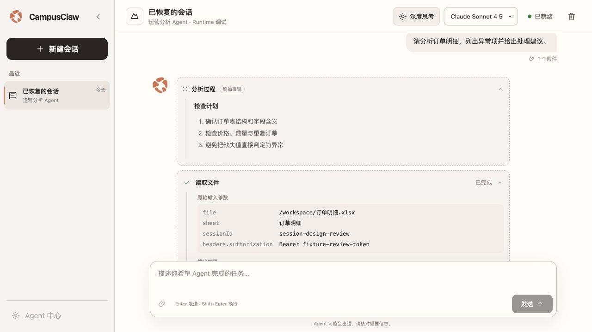
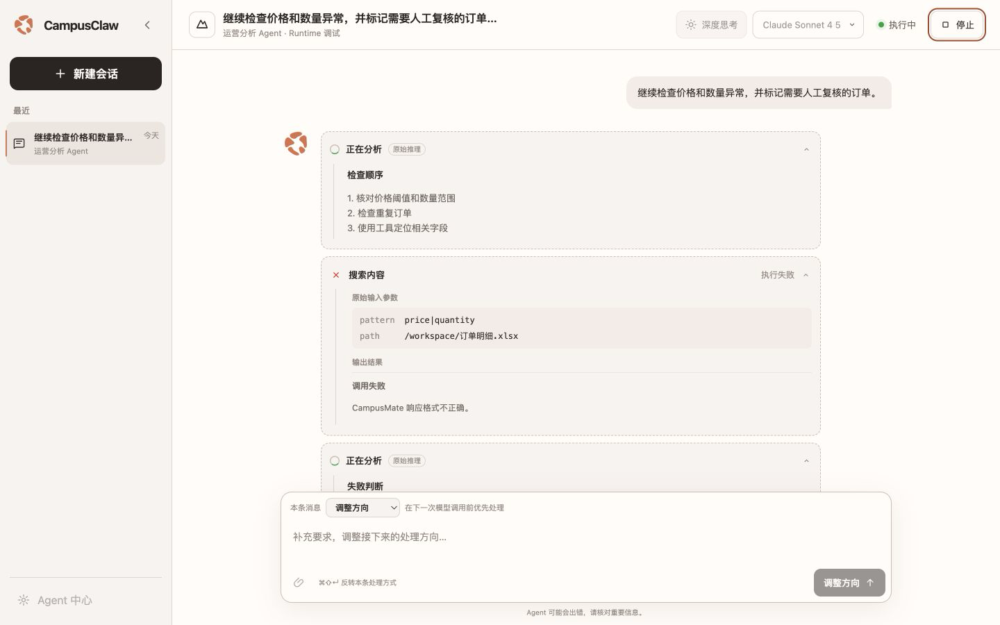

firstUse
已实现 · 过渡 adapter
作用
让调试人员选择一个 Agent，进入真实 Runtime Session 并检查后续模型、工具和事件行为。
主要评审点
- 是否以 Agent 能力而不是协议配置开始。
- 首次进入是否需要单独高保真稿。
- Agent 卡片的名称、描述和权限提示是否足够。

Internal debug only · HTTP V1 1.38.0 aligned · O1 warm-neutral
本页沿用 Runtime HTTP 评审面的卡片结构和稳定评审键。每个界面状态使用固定 screenKey，依次评审作用、用户动作、系统约束和视觉材料；精确设计理由与源码证据仍以 Markdown 为准。
界面直接引用同一张透明 PNG，不通过生成模型重绘。五个有机色块的形状、比例、间距与颜色保持不变；#D97757 只承担品牌识别，暖中性表面负责与其协调。
debugHeadersfirstUse
已实现 · 过渡 adapter
让调试人员选择一个 Agent，进入真实 Runtime Session 并检查后续模型、工具和事件行为。
idleConversation
已实现 · 过渡 adapter

围绕 Agent、Session、消息与工具活动复现 Runtime 行为。工具参数按原值展示；ETag 和原始 SSE 仍不作为常驻页面内容。
assistantRichText此处使用真实 HTML 语义展示目标排版，但实现必须由关闭 raw HTML 的 Markdown AST 通过固定 Vue 组件生成，禁止把模型输出直接写入 v-html 或 innerHTML。
已读取文件，发现以下 3 类异常：
| 异常类型 | 数量 | 处理建议 |
|---|---|---|
| 价格异常 | 24 | 复核定价 |
| 数量异常 | 17 | 校验原始数据 |
| 重复下单 | 9 | 合并并联系用户 |
建议优先检查 order_id 重复记录。
SELECT order_id, COUNT(*)
FROM t_order
GROUP BY order_id
HAVING COUNT(*) > 1;agentActivity参考 Codex 的活动披露密度：Thinking 与每个 Tool 分别使用轻量暖灰虚线框。原始 Thinking 与 Tool result 共用受限 Markdown viewer；当前执行项默认展开，完成项默认折叠。工具详情按“原始输入参数 → 输出结果”纵向排列。
先确认订单结构，再检查 价格、数量与重复订单。
读取完成
已读取 3,482 行，可继续检查异常规则。
runningConversation
已实现 · HTTP 1.38.0

让用户看懂 Agent 正在做什么，并通过“调整方向”“加入队列”“停止”控制唯一 active execution。
保留工具工作台的克制层级，将冷灰表面调整为暖白与暖灰；O1 珊瑚色只用于品牌标识，不承担状态语义。
#FFFCFA#F8F3F0#EFE4DE#2B2522#D97757#00A240#A9472BfirstUse、idleConversation、runningConversation 作为首版稳定评审和测试边界。
O1 使用原始透明 PNG，不生成式重绘，也不缩进深色品牌方块；暖白、暖灰与深暖黑构成工作台，珊瑚色仅用于品牌标识，绿色继续表达运行与完成。
desktop 默认“调整方向”，设置可切换“加入队列”；Cmd/Ctrl+Shift+Enter 对单条消息临时反转。“调整方向”不会硬中断当前模型或工具。
Assistant、原始 Thinking 与 Tool result 共用受限 Markdown；User 和 Tool 参数保持纯文本/结构化 viewer。raw HTML、远程 Markdown 图片、相对路由和危险协议永不激活。
Thinking 直接展示现有 delta/content 原文并标记“原始推理”，不改变事件接口；Thinking 与每个 Tool 分别进入独立暖灰虚线框。每轮 Agent 回答只在完成后显示一个紧凑复制图标，复制本轮全部 Assistant Markdown，不复制 Thinking 与 Tool 内容。
Tool 参数不隐藏凭据形态字段、内部 ID 或绝对路径；12 行、3 层、每值 240 字符只用于页面稳定性。该可见性不得直接用于生产产品前端。
开发模式使用通用 Key/Value 行，不提供凭据模式或固定名称，不与开发者诊断入口合并，不展示自动生成 Header；页面内临时值只用于下一次初始 Events POST。
{kind=link}
{kind=link}